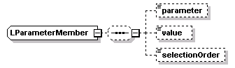

| diagram |  | ||
| namespace | http://www.cisco.com/AXL/API/10.5 | ||
| children | parameter value selectionOrder | ||
| used by |
|
||
| source | <xsd:complexType name="LParameterMember"> <xsd:sequence minOccurs="0"> <xsd:element name="parameter" type="axlapi:XDialParameter" minOccurs="0" maxOccurs="1"/> <xsd:element name="value" type="xsd:string" minOccurs="0" maxOccurs="1"/> <xsd:element name="selectionOrder" type="axlapi:XInteger" minOccurs="0" maxOccurs="1"/> </xsd:sequence> </xsd:complexType> |
| diagram | |||||||
| type | axlapi:XDialParameter | ||||||
| properties |
|
||||||
| source | <xsd:element name="parameter" type="axlapi:XDialParameter" minOccurs="0" maxOccurs="1"/> |
| diagram | |||||||
| type | xsd:string | ||||||
| properties |
|
||||||
| source | <xsd:element name="value" type="xsd:string" minOccurs="0" maxOccurs="1"/> |
| diagram | |||||||
| type | axlapi:XInteger | ||||||
| properties |
|
||||||
| source | <xsd:element name="selectionOrder" type="axlapi:XInteger" minOccurs="0" maxOccurs="1"/> |